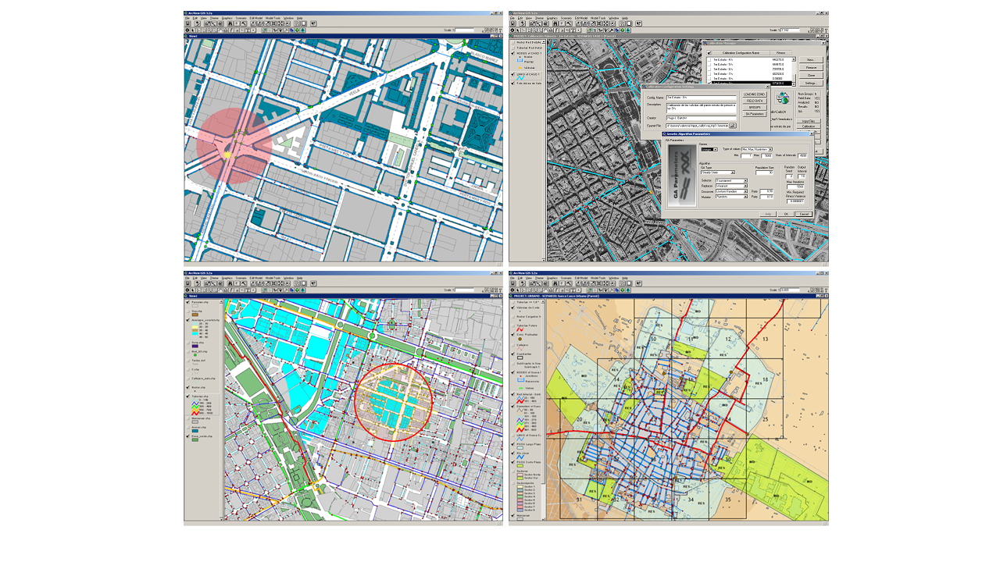

¿Qué es el Editor de Propiedades?
El Editor de Propiedades de QGISRed es el panel central para revisar y modificar los atributos de todos los elementos de la red: tuberías, nudos, depósitos, bombas, válvulas y embalses. Es la alternativa a abrir la tabla de atributos de QGIS elemento a elemento.
El editor muestra los atributos del elemento seleccionado en el mapa y permite editarlos directamente, con validación inmediata de los valores introducidos.
Navegación entre elementos vinculados
Una de las mejoras más valoradas del editor es la capacidad de navegar directamente entre elementos relacionados sin volver al mapa:
- Desde una tubería: acceder directamente a los nudos extremos
- Desde un nudo: ver todas las tuberías conectadas
- Desde una bomba: acceder a la curva característica asociada
- Desde una válvula: ver los nudos aguas arriba y aguas abajo
Esta navegación permite inspeccionar la topología de la red de forma rápida y eficiente sin depender de la vista de mapa.
Edición sin preselección de capa
En QGIS estándar, para seleccionar y editar un elemento es necesario tener activa la capa correspondiente en el panel de capas. En redes complejas con múltiples capas superpuestas, esto ralentiza considerablemente el flujo de trabajo.
El Editor de Propiedades de QGISRed elimina esta restricción: basta con hacer clic sobre cualquier elemento de la red en el mapa para que el editor lo identifique automáticamente, independientemente de qué capa esté activa. El editor detecta el tipo de elemento y carga sus propiedades de inmediato.
Edición de múltiples elementos
El editor permite también la edición de atributos en múltiples elementos simultáneamente:
- Selección rectangular o por polígono en el mapa
- Modificación de un atributo en todos los elementos seleccionados
- Filtrado por tipo de elemento dentro de la selección